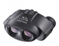

UCF系列望远镜，又称保罗棱镜倒置（UCF）式望远镜、小保罗望远镜，是二十世纪望远镜光学系统设计的另一突破性革新，由于对传统保罗棱镜组采用了与传统光学系统完全不同光路设计和装配方法，从而实现了使用小尺寸的保罗棱镜和小直径的物镜组成的光学系统也能取得优异的光学成像，从而在很大程度上降低了整个光学系统尺寸，使该系列望远镜与传统的PCF系列望远镜相比，除了成像清晰，视野开阔外，还具有体积小巧，重量轻盈，便于携带，使用方便等与DCF望远镜相似的优点，同时UCF望远镜还继承了传统望远镜中轴调焦，右目镜视度补偿的优良焦距调节结构。
第一次使用专业望远镜，这一款用着很满意
方便携带 10倍放大，视野明亮，室内也可使用 有视力调整功能
较贵
5分
带去看音乐节演唱会很棒 手感很好，小巧方便携带 失真较小
暂无发现
4.5分
外型小巧，握感舒服 有类似单反屈光镜的视力调整功能 最近距离2.8m，配合10倍的放大倍率可以观察近处的目标